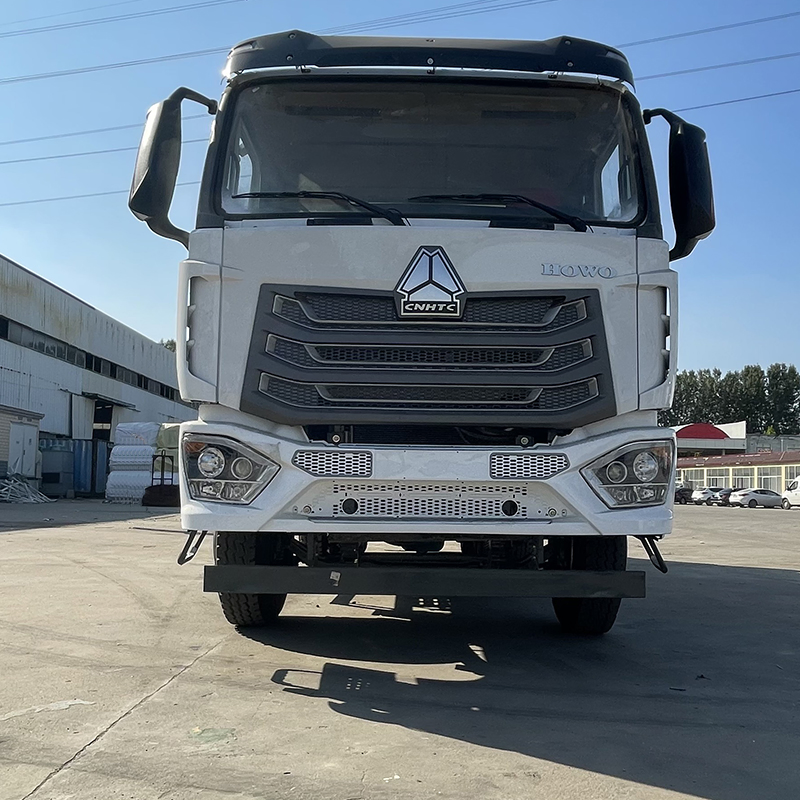

Connecting Nigeria, One Delivery at a Time.
Drigs Roamers Logistics Ltd is a trusted and efficient logistics company dedicated to moving goods quickly, safely, and reliably across Nigeria and beyond. With a passion for excellence and a customer-first approach, we specialize in local and interstate delivery, freight handling, and e-commerce logistics solutions.
Founded to simplify logistics for businesses and individuals, we combine modern technology, experienced drivers, and a robust vehicle fleet to ensure secure, timely deliveries. We believe in transparency, accountability, and constant communication.